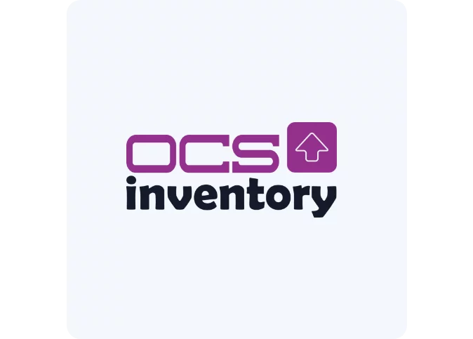
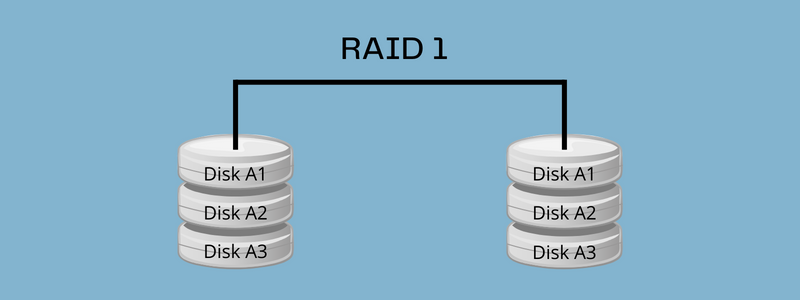
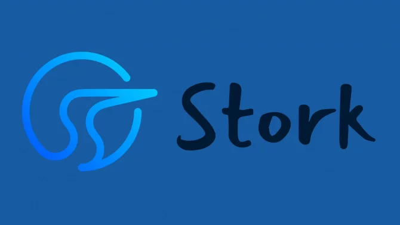

📖 Documentations
Voici les documentations que j'ai produit durant mes 2 années de BTS :

Documentation sur OCS Inventory
Voici ma documentation sur OCS Inventory :
Documentation sur le stockage RAID
Voici ma documentation sur le stockage RAID :
Documentation sur KEA
Voici ma documentation sur la création d'un serveur DHCP sous KEA :
Documentation sur Stork
Voici ma documentation sur Stork (Tableau de bord pour KEA) :
Documentation sur FTP sous Windows Server 2022
Voici ma documentation sur la création d'un serveur FTP sous Windows Server 2022 :
Documentation sur SQLiteStudio
Voici ma documentation sur le SGBD SQLiteStudio :